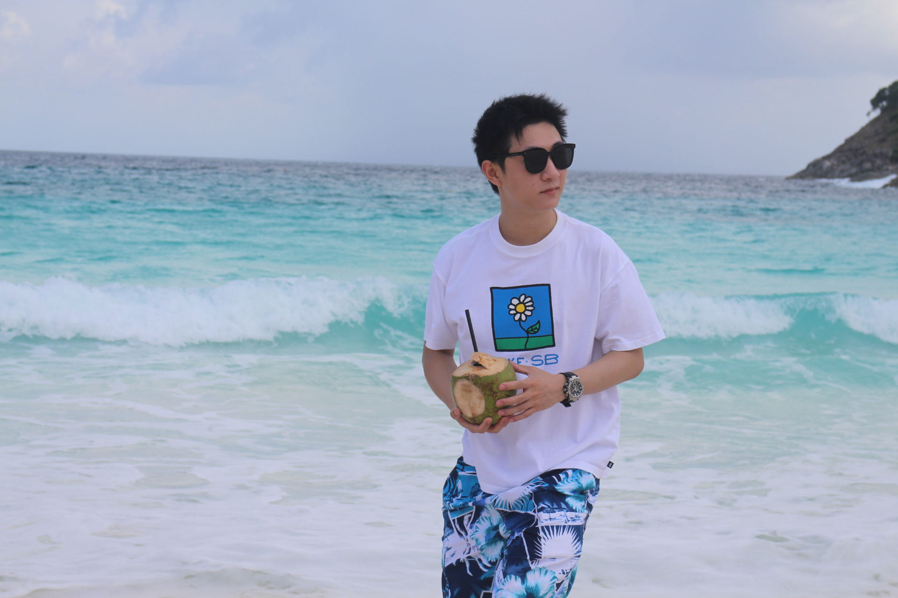

我叫王庭琛，出生于1996年，是一名从事自动驾驶行业的算法工程师。
Tingchen Wang(George), born in 1996, is now an algorithm engineer in the field of autonomous driving.
---
(2022.07 - 至今) 当前就职于上海云骥智行智能科技有限公司，司职高级感知算法工程师，主要负责以下工作：
- 感知后处理与目标跟踪
- 多传感器融合
- 端到端感知算法设计与开发
(2022.07 - Present) Currently I am working at Shanghai Pegasus Technology as a Senior Perception Algorithm Engineer, mainly responsible for the following work:
- Post-processing and object tracking for perception module
- Multi-sensor fusion
- End-to-end perception algorithm development
---
(2020.07 - 2022.06) 就职于华为智能车解决方案BU，主要工作内容为视觉SLAM和量产ADAS项目等。
AI algorithm engineer with focus on computer vision in Huawei Technologies(Autonomous Intelligent Sensors).
In my work I specialize in visual SLAM and ADAS applications.
---
本科就读于哈尔滨工业大学电气工程及其自动化专业，毕业排名前5%；大三期间被选派到香港理工大学HKPolyU交流。
研究生毕业于新加坡国立大学电子与计算机工程，主要方向是基于深度学习的目标检测跟踪、SLAM和传统3D视觉重建等。
During my bachelor time back to Harbin Institute of Technology(HIT), I was ranked as the top 5% around my classmates(2/243).
In 2017, I studied in the HK PolyU as an exchange student. As for graduate studies, I went abroad to National University of Singapore(NUS) for further research in deep learning & computer vision.
您可以通过上方的链接查看我的照片收藏，项目归档，以及其他个人信息。
Feel free to visit my photo collections, project archives and detail personal information from the above links.